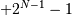
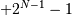

numpy.invert¶
- numpy.invert(x[, out]) = <ufunc 'invert'>¶
Compute bit-wise inversion, or bit-wise NOT, element-wise.
Computes the bit-wise NOT of the underlying binary representation of the integers in the input arrays. This ufunc implements the C/Python operator ~.
For signed integer inputs, the two’s complement is returned. In a two’s-complement system negative numbers are represented by the two’s complement of the absolute value. This is the most common method of representing signed integers on computers [R32]. A N-bit two’s-complement system can represent every integer in the range
 to .
to .Parameters : x1 : array_like
Only integer types are handled (including booleans).
Returns : out : array_like
Result.
See also
bitwise_and, bitwise_or, bitwise_xor, logical_not
- binary_repr
- Return the binary representation of the input number as a string.
Notes
bitwise_not is an alias for invert:
>>> np.bitwise_not is np.invert True
References
[R32] (1, 2) Wikipedia, “Two’s complement”, http://en.wikipedia.org/wiki/Two’s_complement Examples
We’ve seen that 13 is represented by 00001101. The invert or bit-wise NOT of 13 is then:
>>> np.invert(np.array([13], dtype=uint8)) array([242], dtype=uint8) >>> np.binary_repr(x, width=8) '00001101' >>> np.binary_repr(242, width=8) '11110010'
The result depends on the bit-width:
>>> np.invert(np.array([13], dtype=uint16)) array([65522], dtype=uint16) >>> np.binary_repr(x, width=16) '0000000000001101' >>> np.binary_repr(65522, width=16) '1111111111110010'
When using signed integer types the result is the two’s complement of the result for the unsigned type:
>>> np.invert(np.array([13], dtype=int8)) array([-14], dtype=int8) >>> np.binary_repr(-14, width=8) '11110010'
Booleans are accepted as well:
>>> np.invert(array([True, False])) array([False, True], dtype=bool)